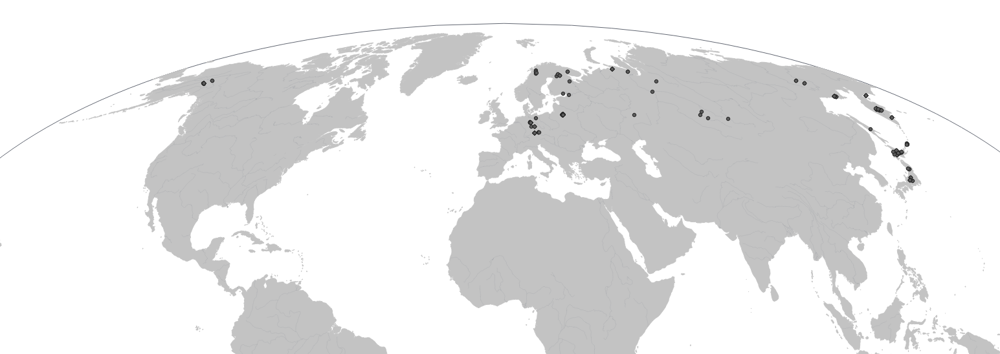

井上 真帆Maho Inoue
グライフスヴァルト大学 植物学・景観生態学研究所 / 博士研究員
研究 · アスヒカズラ属 · 野外調査
地図・野外調査の写真
Diphasiastrum complanatum の採集地点
この地図は、現在進めている生物地理研究に用いた D. complanatum の採集地点を示したもので、北半球の広い範囲にわたっています。

この研究に用いたサンプルは、次のような複数の経路で入手しました。
- 著者らによる野外調査
- 研究機関の標本庫に収蔵された標本
- 共同研究者の方々からご提供いただいたサンプル
サンプルの入手元はメタデータに、また必要に応じて関連する論文にも適切に記載しています。すべてのサンプルは、採集者または所蔵機関と取り決めた条件に従って使用しています。